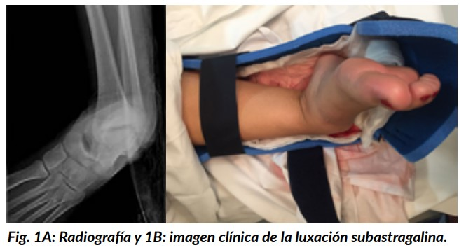
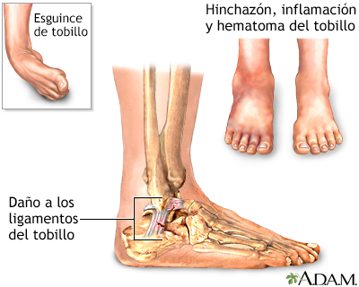
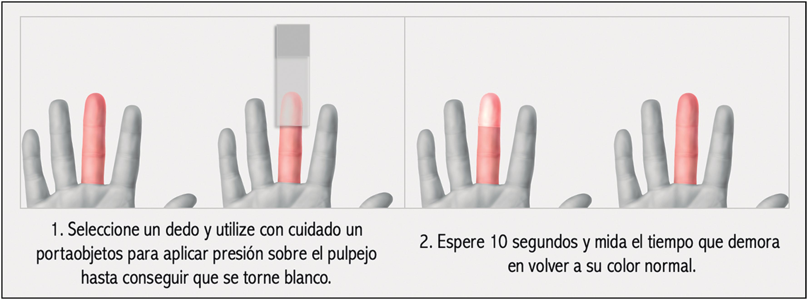
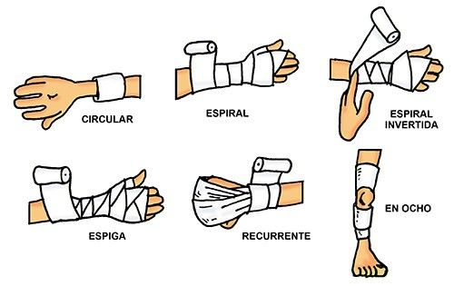

Primeros auxilios
son la atención inmediata y provisional que se brinda a una persona que ha sufrido un accidente o una emergencia médica
antes de que llegue la ayuda profesional. El objetivo es evitar que la situación empeore, aliviar el dolor y mantener
a la persona con vida hasta que pueda recibir una atención médica adecuada.
pasos de los primeros auxilios:
1. Mantener la calma y actuar con rapidez
2. Evaluar la escena antes de ayudar
3. Checar los signos vitales
4. No mover a la víctima hasta determinar la gravedad del daño
5. No proporcionar líquidos a una persona inconsciente
Antes de aplicar cualquier tipo de método de primeros auxilios hay cosas que tener en cuenta:
mantener la calma es el primer paso y muy importante a la hora de proporcionar ayuda, crear un espacio seguro en
caso de accidente en algún espacio riesgoso y lo más importante no brindar ningún tipo de apoyo en caso de no tener
conocimiento ante el tema.
La regla de oro de los primeros auxilios es proteger, avisar y socorrer.
Ejemplos de situaciones donde se aplican los primeros auxilios:
-Heridas con hemorragia
-Quemaduras
-Ahogamiento
-Paro cardíaco
-Atrancamiento
-Infarto
-Golpe de calor
-Shock
Heridas y Hemoragias
Las heridas es la pérdida de continuidad de una sección de la piel acompañada o no de lesiones en los tejidos subyacentes. Se pueden clasificar en heridas agudas y heridas crónicas, dependiendo de su evolución y características. Existen diferentes tipos de heridas, que varían según la profundidad, complejidad y causa.

-Una herida por abrasión es una lesión superficial en la piel causada por el roce con una superficie áspera.
-Una herida incisa es un corte limpio que se produce por el impacto de un objeto afilado, como un cuchillo o un cristal.
Son comunes en accidentes domésticos o laborales, y en procedimientos quirúrgicos
-Una herida punzante es un corte profundo que se produce en la piel por un objeto puntiagudo, como un clavo o un trozo de metal.
-Una herida avulsiva es una lesión que se produce cuando la piel se desprende del cuerpo. Suelen ser grandes y pueden comprometer
tejidos profundos.
-Una herida lacerante es un desgarro irregular en la piel o tejido subyacente. También se le conoce como corte.
-Una herida de amputación es la cicatriz que queda después de que se corta quirúrgicamente una parte del cuerpo. Puede ser de un
brazo, una pierna, un dedo de la mano o del pie, entre otros
Las hemorragias son la pérdida de sangre por la ruptura de la pared de uno o más vasos sanguíneos o vías naturales. Se consideran
vías naturales de circulación sanguínea a las arterias, venas y vasos capilares.
También hay hemorragias externas, estas se ocasionan por desgarros, amputación, fracturas, traumatismo por aplastamiento o hemorragia
nasal.
Los traumatismos por aplastamiento son muy interesantes ya que causan una enfermedad muy grave que se llama síndrome compartimental, que
es cuando ocurre una hemorragia pero sin herida.
Hay una cápita muy delgada que se llama fascia.
Cuando hay una hemorragia por debajo de la Fascia y arriba del músculo, está presión que va a haber puede aplastar el músculo y puede
incluso comprimir lo que son los vasos y las arterias.
A los pacientes que le sucede esto pueden terminar en fasciotomías o incluso amputaciónes.
Una hemorragia capilar es un sangrado que se produce cuando se rompen los capilares, los vasos sanguíneos más pequeños del cuerpo.
Es un tipo de hemorragia común en lesiones menores, como cortes superficiales o raspaduras.
Una hemorragia venosa es la salida de sangre de una vena, de color rojo oscuro y de forma continua. Puede aparecer en heridas simples
y complejas.
Una hemorragia arterial es una pérdida de sangre que se produce cuando se lesiona una arteria. Es la hemorragia más grave y puede ser
mortal si no se trata de inmediato
Luxación
Una luxación es una lesión en la articulación que se produce cuando los extremos de dos huesos se separan. También se le conoce como dislocación.
Los ligamentos son bandas flexibles de tejido fibroso que conectan diferentes huesos y cartílagos.
Los ligamentos también unen los huesos en una articulación.
Una dislocación es dolorosa y, además, inmoviliza la articulación. Algunos ejemplos de las zonas afectadas son los hombros, los codos, los dedos, los tobillos, las rodillas, las caderas y la mandíbula.
Algunas de las causas podria ser un golpe o caída, practicar algún deporte de contacto, lesiones por desgaste o el sobreentrenamiento deportivo.
Los primeros auxilios para una luxación son inmovilizar la articulación, aplicar hielo, mantener al paciente en reposo y buscar atención médica. Es importante actuar rápidamente y con precaución para ayudar a reducir el dolor y el daño en la articulación.
El tratamiento de una luxación generalmente comienza con la reducción, que es la reposición del hueso en su lugar. Luego, se inmoviliza la articulación con una férula o un yeso para permitir que la lesión sane. Se puede necesitar cirugía en algunos casos, especialmente si hay fracturas o si la luxación no puede reducirse con maniobras cerradas
Esguince
Un esguince es una lesión que ocurre cuando un ligamento, que conecta huesos en una articulación, se estira o se desgarra. La gravedad de un esguince puede variar desde un estiramiento leve hasta una ruptura completa del ligamento.
Causas:
-Movimientos forzados: Torsiones, movimientos bruscos o caídas pueden causar esguinces.
-Actividades deportivas: La práctica de deportes que involucran movimientos rápidos o cambios de dirección pueden aumentar el riesgo de esguinces.
-Superficies irregulares: Caminar o correr sobre superficies desiguales puede provocar esguinces de tobillo.
Grados de esguince:
-Primer grado: las fibras se estiran pero permanecen intactas
-Segundo grado: algunas a casi todas las fibras se rompen
-Tercer grado: todas las fibras se rompen
El tratamiento para un esguince (o torcedura) generalmente comienza con el método RICE: reposo, hielo, compresión y elevación. En casos más graves, puede ser necesaria una férula o inmovilización, además de medicación y fisioterapia para recuperar la movilidad y fuerza
Fracturas
Una fractura es la ruptura de un hueso, ya sea de forma parcial o total. Las fracturas pueden ser causadas por lesiones y son lesiones musculoesqueléticas comunes, estas vienen acompañadas de un dolor intenso, deformación de la zona, hematoma, hinchazón o sangrado, entumecimiento y movilidad limitada.
-Una fractura transversal es una rotura ósea que se extiende de manera horizontal y perpendicular al hueso.
- Es un tipo de fractura completa, lo que significa que la línea de la fractura atraviesa todo el hueso.
-Una fractura lineal es una rotura en un hueso que se produce en el mismo sentido que el eje mayor del hueso.
-Una fractura oblicua es una rotura de hueso que se produce en un ángulo con respecto al eje del hueso.
Una fractura de tallo verde Propias de los niños, es una fractura incompleta del hueso, con una forma que recuerda a la de una rama verde a medio romper.
-Una fractura espiroidea es una rotura ósea que se enrolla en espiral a lo largo del hueso. Se produce cuando se aplica una fuerza de torsión sobre el hueso.
-Una fractura conminuta es una fractura en la que un hueso se rompe en dos o más fragmentos. También se le conoce como fractura multifragmentaria.
Para evitar que la herida empeore, no muevas a la persona, a no ser que sea necesario. Toma estas medidas de inmediato mientras esperas que llegue la ayuda médica:
-Detén posibles sangrados.
-Aplica presión sobre la herida con un vendaje estéril o un paño o una prenda limpia.
-Evita mover la zona lastimada.
-No intentes volver a alinear el hueso ni empujar hacia dentro un hueso que sobresale.
-Si recibiste capacitación sobre cómo poner una férula y no hay ayuda médica disponible de inmediato,
coloca una férula en la zona por encima y por debajo de los sitios de fractura.
-Rellenar las férulas puede ayudar a reducir el dolor.
-Aplica compresas de hielo para limitar la hinchazón y ayudar a aliviar el dolor.
-No apliques hielo directamente sobre la piel.
-Envuelve el hielo en una toalla, un paño o algún otro material.
En caso de una fractura abierta, los primeros auxilios consisten en detener el sangrado, inmovilizar la zona y buscar atención médica. Es nesesario evaluar la circulacion de sangre a la persona afectada, para esto se puede ocupar la tecnica de llenado capilar. El llenado capilar es una prueba que mide cuánto tiempo tarda la sangre en volver al tejido después de haber sido forzada a salir. Se realiza en las uñas y se utiliza para evaluar la deshidratación y la circulación sanguínea
Vendajes
Un vendaje es una técnica que consiste en envolver una parte del cuerpo con una venda para brindar apoyo, protección y cuidado.
-Los vendajes pueden tener diferentes funciones, como:
-Compresión: Para detener hemorragias, reducir la pérdida de líquidos y favorecer la absorción de los mismos
-Contención: Para limitar el movimiento de articulaciones o extremidades en caso de fractura, esguince o luxación
-Corrección: Para inmovilizar una parte del cuerpo y corregir deformidades
-Sujeción: Para fijar material de curación o entablillados
-Protección: Para evitar infecciones y proteger las zonas afectadas
Tipos de vendajes
-Un vendaje circular es un tipo de vendaje que se realiza dando vueltas circulares sobre la zona a proteger. Se utiliza para fijar apósitos,
iniciar o finalizar un vendaje, o sujetar apósitos en los miembros superiores e inferiores.
-Un vendaje espiral es una técnica de vendaje que se utiliza para proteger o comprimir extremidades. Se realiza con una venda elástica
que se adapta a la zona a vendar.
-El vendaje espiral invertido es una técnica que se utiliza para envolver una zona lesionada con una venda diagonal descendente. Se usa para lesiones musculares o articulares, o para prevenir estrés durante la actividad física.
-Un vendaje en espiga es un tipo de vendaje que se utiliza para comprimir y mejorar el retorno venoso de una zona. Se realiza con una técnica similar a la del vendaje en espiral, pero retrocediendo en cada giro.
-Un vendaje recurrente es un tipo de vendaje que se utiliza para fijar apósitos en heridas de la cabeza, en muñones o en dedos. Su función es proteger, sujetar y comprimir.
-El vendaje en 8 es un tipo de vendaje que se utiliza en las articulaciones para inmovilizarlas y sujetar apósitos. Se usa en el tobillo, rodilla, codo, muñeca y hombro.
-El vendaje capelina es un tipo de vendaje que cubre la cabeza de manera integral. Es similar a una capucha o gorro y se utiliza para proteger lesiones y heridas, controlar hemorragias y fijar apósitos
En los primeros auxilios los vendajes se usan especialmente en caso de heridas, hemorragias, fracturas, esguinces y luxaciones
RCP
[Reanimación cardiopulmonar]
Es un procedimiento de emergencia para una persona cuyo corazón se ha detenido (llamado paro cardíaco súbito) o para quien no se encuentra respirando. La RCP puede mantener la circulación y la respiración hasta la llegada de ayuda médica de emergencia.
-RCP Básica, Concepto y Procedimiento
-Verificar la Seguridad.
-Evaluar la Conciencia.
-Llamar a Emergencias.
-Iniciar Compresiones Torácicas.
-Realizar Ventilaciones.
-Continuar hasta la Llegada de la ayuda
Técnica de RCP
Primero es mantener la calma, preguntarle cómo se llama para ver si está consiente, en dado caso de realizar el RCP, tiene que ser sobre una superficie rígida La posición para realizar la técnica de RCP es muy importante, es mantener la espalda recta, brazos derechos. El tiempo que debe durar entre compresiones no debe ceder más de 20 o 30min
Pasos para realizar RCP en niños
-Inclinar la cabeza hacia atrás y levantar el mentón
-Tapar las fosas nasales con los dedos índice y pulgar
-Dar dos respiraciones boca a boca, cada una de un segundo de duración
-Realizar 30 compresiones torácicas con el talón de la mano, a un ritmo de 100-120 por minuto
-Repetir la secuencia de 30 compresiones y 2 insuflacione
Tecnica de heimblich
La maniobra de Heimlich (compresiones abdominales) es un procedimiento rápido de primeros auxilios para tratar la asfixia debido a la obstrucción de las vías aéreas superiores por un cuerpo extraño, en forma típica un alimento o un juguete. También pueden usarse compresiones torácicas y golpes en la espalda si es necesario.
Las maniobras de Heimlich y otras deben usarse solo cuando la obstrucción de la vía aérea es grave y la vida está en peligro. Si la persona que se ahoga puede hablar, toser con fuerza o respirar en forma adecuada, no se requiere ninguna intervención.
Pasos para realizar la maniobra de Heimlich:
1.Ponte detrás de la persona atragantada y rodea su cintura con tus brazos.
2.Coloca tus manos en forma de puño, con una mano sobre la otra, justo por encima del ombligo de la persona.
3.Aplica una presión rápida y firme hacia adentro y hacia arriba en el abdomen de la persona.
4.Repite la maniobra varias veces hasta que el objeto sea expulsado de la tráquea.
5.Después de cada maniobra, verifica si la persona puede respirar normalmente.
Pasos para realizar la maniobra de Heimlich en niños:
-Rodear la cintura del niño con los brazos.
-Formar un puño con una mano.
-Colocar el puño a mitad de camino entre el ombligo y el esternón.
-Cubrir el puño con la otra mano.
-Aplicar una presión firme hacia adentro y hacia arriba.
-Repetir las compresiones con rapidez 6 a 10 veces según sea necesario.
Conclusión
Los primeros auxilios son tecnicas complejas que delimitan si alguien vive o muere, el objetivo siempre sera la prevervacion de la vida del induviduo y evitar que las lesiones empeoren haciendo aun más complicada la situación.
Para poder brindar primeros auxilios a un individuo se debe tener conosimiento del tema ya que no tenerlo puede provocar la alteracion de la lesion derivando a algo mucho mas grave lo cual es todo lo contrario a lo que se tiene pensado.
Igualmente se nesesita seguir las reglas de los primeros auxilios de la manera mas apegada ya que cada paso es crucial al momento de intentar preservar la vida del individuo.
Existe diferentes tipos de lesiones que pueden ocurrir en casos de la vida diaria, de allí la relevancia de saber dar primeros auxilios de manera adecuada, saber si lo que estas por hacer es adecuado o no ya que lesiones no mortales pueden derivar en problemas a largo plazo para los individuos afectados y en casos de lesiones graves pueden terminar en muerte.
Tecnicas como el RCP y heimlich son de suma importancia ya que ambas tienen como objetivo perservar la vida.
El uso de tecnicas de vendaje permiten un mejor control el lesiones como luxaciónes, esguinces o fracturas, ya que su principal objetivo es
limitar el movimiento de la parte afectada, algo sumamente crucial a la hora de tratar alguno de estos tres tipos de lesion.